Samoussas raclette poire coppa

Aujourd’hui je crois qu’il était temps de partager avec vous cette recette!! Non seulement parce qu’il fait froid mais aussi parce que dans 20 jours c’est (déjà) le printemps et que les raclettes laisseront place à de jolies recettes un peu plus légères! Bref me voici donc avec ma recette de samoussas raclette poire coppa!
Ça faisait longtemps que j’avais envie de vous reproposer une recette de samoussas (vous en avez déjà ici, ici et ici!) mais voilà, le gros problème des samoussas c’est que c’est bien meilleur quand ça sort du four alors c’est plutôt difficile de prendre les photos car généralement il n’en reste presque plus (même plus du tout!!). Pour cette fois ci, j’ai pris mon « appétit en patience » et je vous ai pris ces samoussas raclette poire coppa sous leur meilleur profil :-)! Pour réaliser cette recette je vous conseille de choisir des poires bien mûres qui apporteront un petit goût sucré absolument parfait mélangé avec le fromage à raclette! Essayez aussi de bien doser les ingrédients dans chaque samoussa et de ne pas mettre plus de fromage que de poire, que de coppa (mais ne vous prenez pas trop la tête non plus! On n’est pas au gramme près!!). Aussi bien en apéritif (attention la recette est pour seize samoussas, alors selon le nombre que vous êtes il faudra peut-être augmenter la proportion des ingrédients) qu’en entrée ou encore pour un diner léger accompagné d’une salade ces samoussas raclette poire coppa sauront je l’espère se trouver une petite place à votre table! Je ne vous parle même pas de mon chéri qui a carrément adoré et qui compte même en préparer lui-même à l’occasion^^ (dans 5 ans peut-être^^ j’ai espoir!!) alors n’hésitez pas à vous lancer! Et pour ceux qui me répondront que les samoussas c’est trop compliqué à former je vous dis non non non et non ce n’est pas vrai! Prenez votre temps s’il faut et une fois que vous aurez le coup de main ça ira tout seul (et vous serez super fiers)! Je vous laisse découvrir la recette et j’espère qu’elle vous plaira autant qu’à nous!! 🙂
Ingrédients
- Feuilles de brick - 8
- Coppa - 6
- Tranches de fromage à raclette - 12
- Poires mûres - 2
Instructions
- Commencer par préparer vos ingrédients : Enlever la peau du fromage à raclette et coupez-le en tout petits carrés ou longs morceaux comme vous voulez Couper la poire en petits dès et faites de même avec la coppa
- Préchauffer le four à 180°
- Couper toutes vos feuilles de brick en deux
- Pour former vos samoussas faites comme sur les photos :
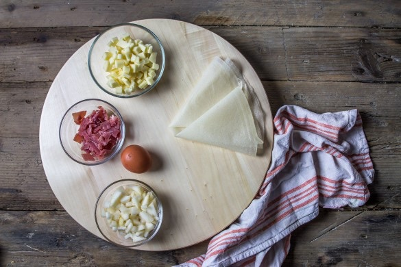
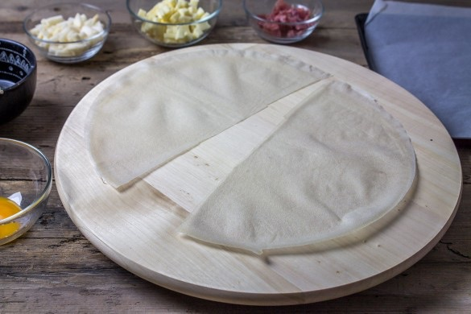
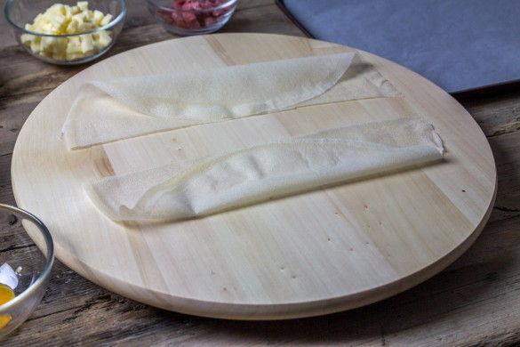
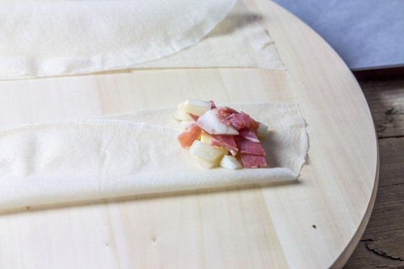
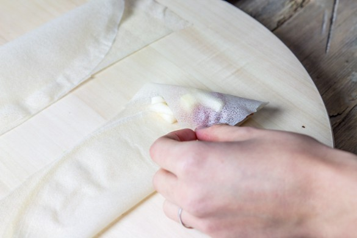
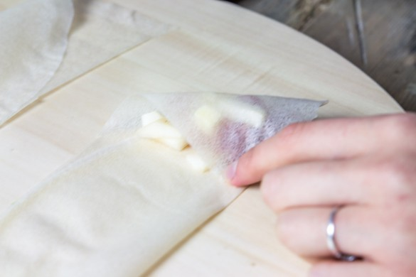
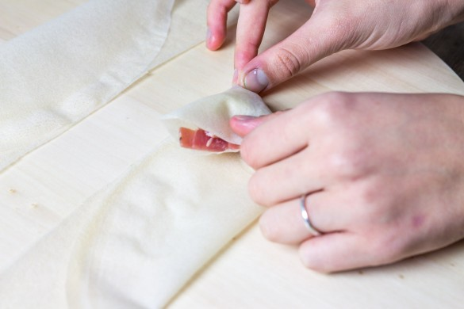
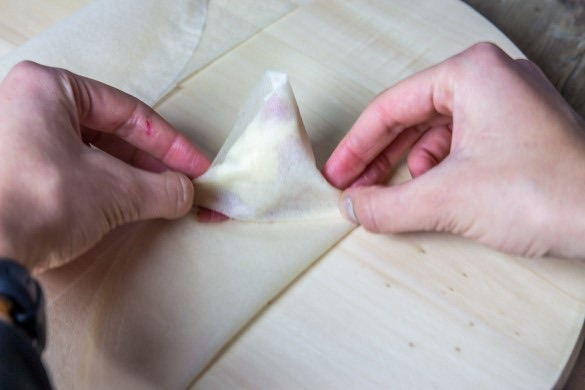
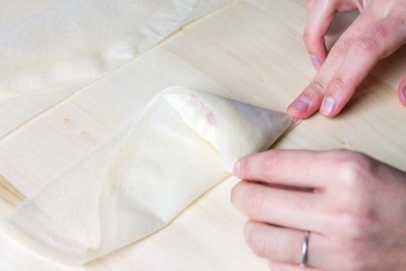
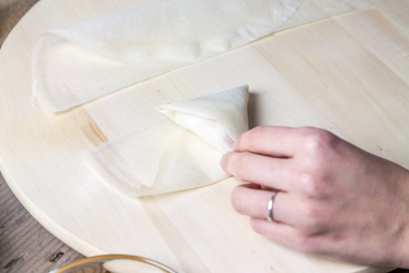
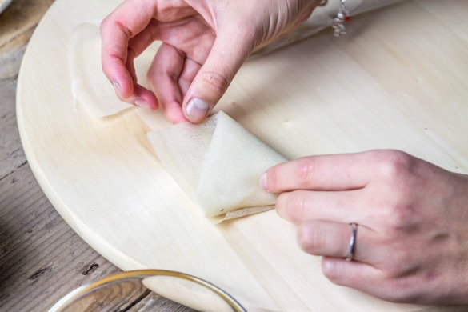
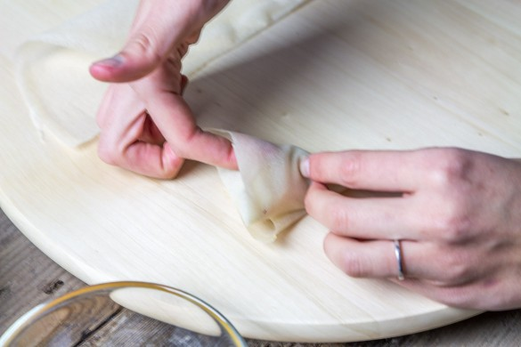
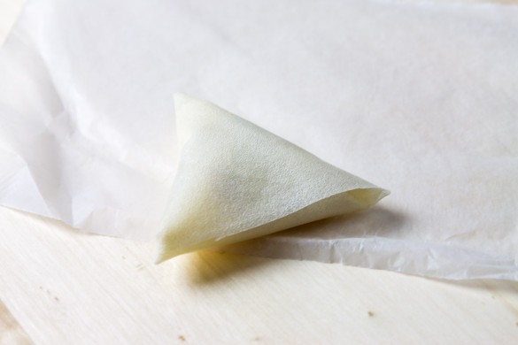
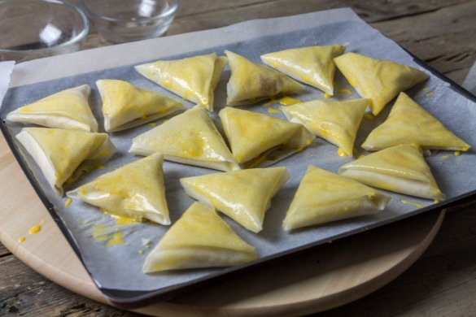
Les tips de la communauté
Recette très appréciée et bien reçue. Les commentateurs louent l'originalité de l'association raclette-poire-coppa et la clarté du tutoriel photo. L'auteure souligne la possibilité de varier les garnitures et apprécie les retours positifs.
Astuces
- Utiliser des lardons fumés à la place de la coppa pour une saveur différente
- Les photos pas à pas aident beaucoup les cuisiniers non manuels à se lancer
- La poire ajoute une note sucrée délicieuse qui équilibre les saveurs salées
Variantes suggérées
- Remplacer la coppa par des lardons fumés
- Possibilité de cuisiner les samoussas en apéritif chaud
Ajustements signalés
- descendre quelques pistes de ski ! Trop beau , trop bon !